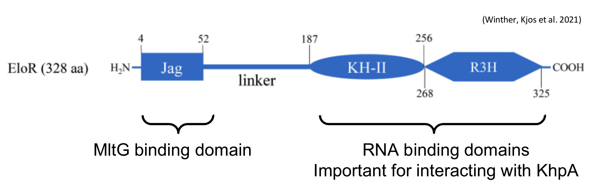
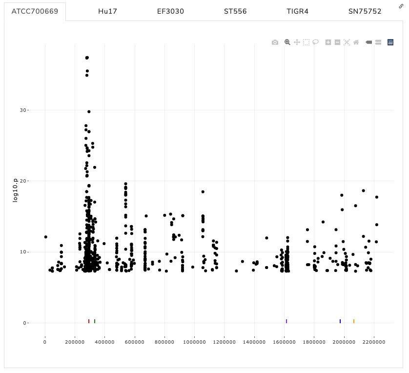
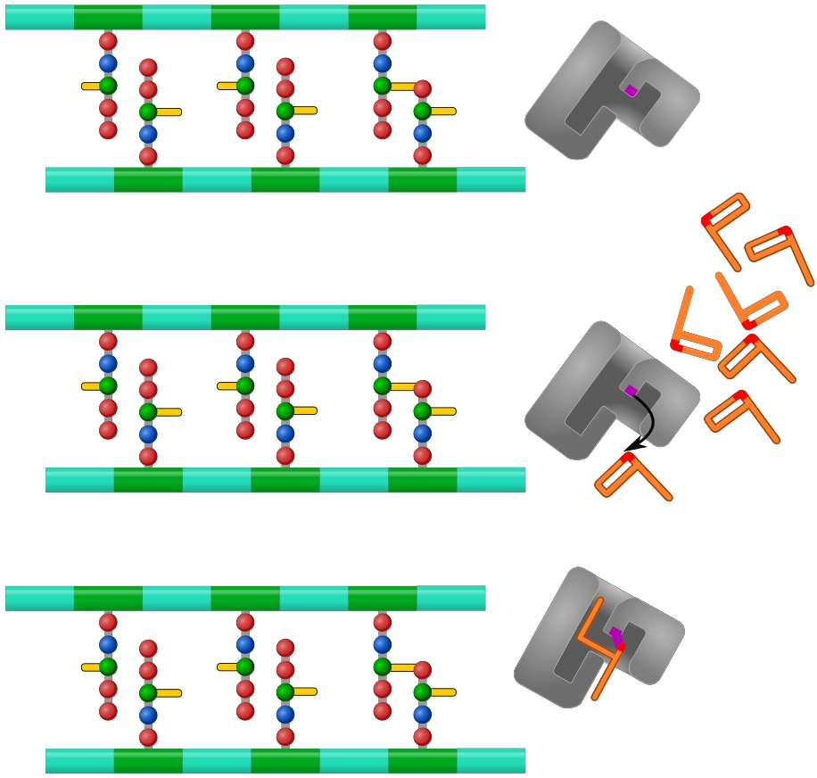
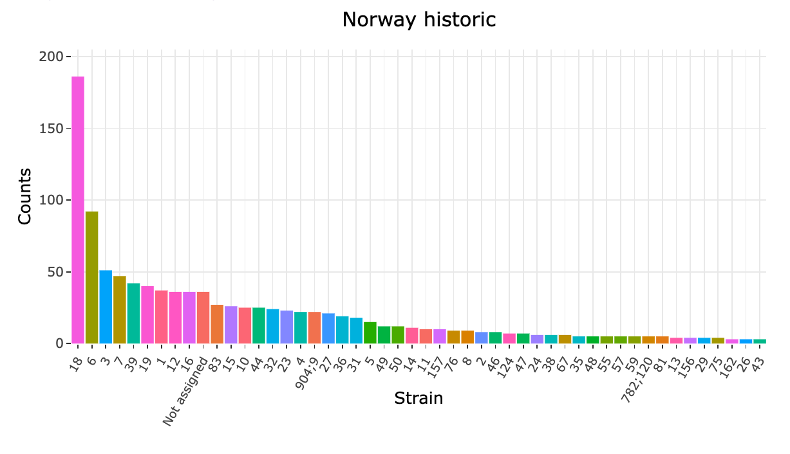
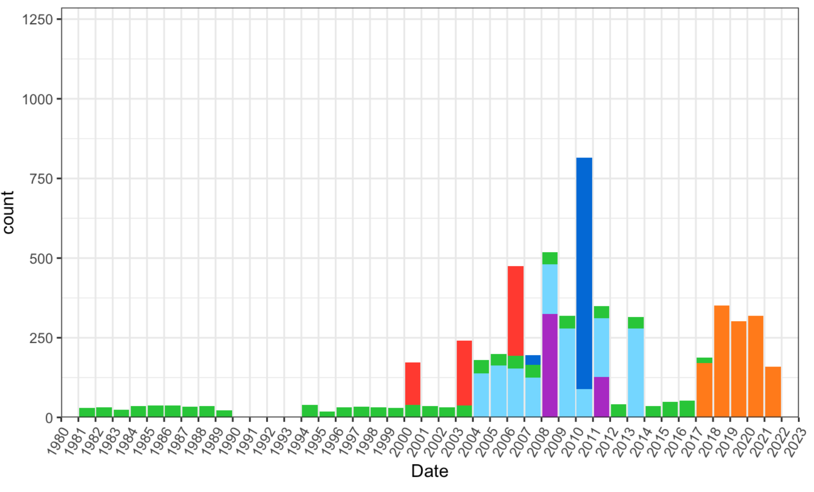

Disentangling
Home
About this project
Disentangling penicillin resistance and compensatory adaption in pneumococci
by combining genomics and molecular microbiology

Sequences of interest
In this analysis, we investigate specific genes of interest identified by our colleagues at NMBU.…
Jan 11, 2023

Conditional GWAS
Here we present the results of a genome-wide association study (GWAS) conducted using pyseer
(John A. Lees et al. 2018)
, a tool for identifying genetic associations with complex traits. The GWAS was performed using the linear mixed effects model such that the minimum…
Jan 3, 2023

Penicillin binding proteins
PBPs are a type of protein found in bacteria that bind to penicillin, a type of antibiotic. PBPs play a key role in the synthesis of the bacterial…
Dec 14, 2022

Serotypes, GPSC-clusters, and MLST types
The following plots presents an…
Nov 23, 2022

An overview of the data
The goal of this project is to determine mutations and factors that are involved in penicillin resistance. We have collected a data set with…
Nov 4, 2022
No matching items